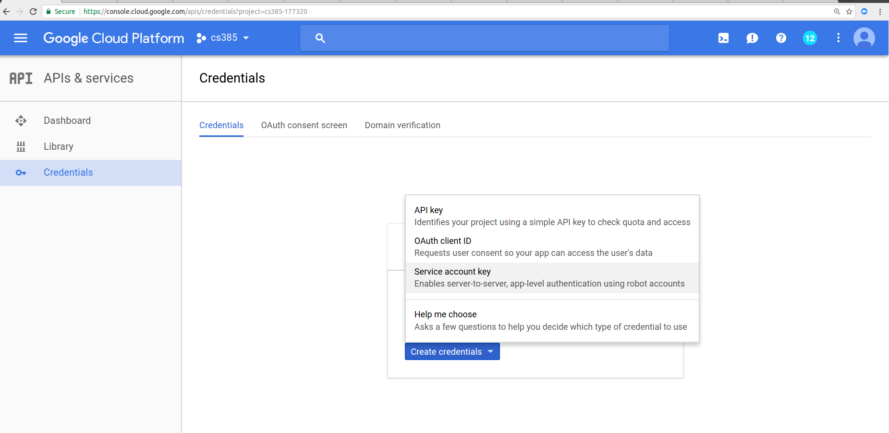

What we just did was a fun exercise, but in reality it is hard to imagine that a company could function if they had to manually provision (or decommission) every instance. Companies rely heavily on automation to provision instances very quickly, with the correct software, with minimal human intervention.
In this part of the lab we are going to learn how to do this with the Google Cloud API. Most other Cloud Platform providers such as Amazon, Heroku and Digital Ocean have similar offerings.
The first task we need to complete is to enable credentials. From the drop down menu select APIs and Services >> Credentials. Click on Create Credentials and select Service Account Key:

On the Create Service account key prompt, select your default service account, and select a key of type JSON, and click Create. This will download a file to your workstation. SAVE THIS FILE ON A SAFE PLACE THAT IS ONLY ACCESSIBLE TO YOU.
Lets no test the file with a smal python program. Create a virtual environment, and install the google-cloud package:
virtualenv venv source venv/bin/activate pip install google-cloud